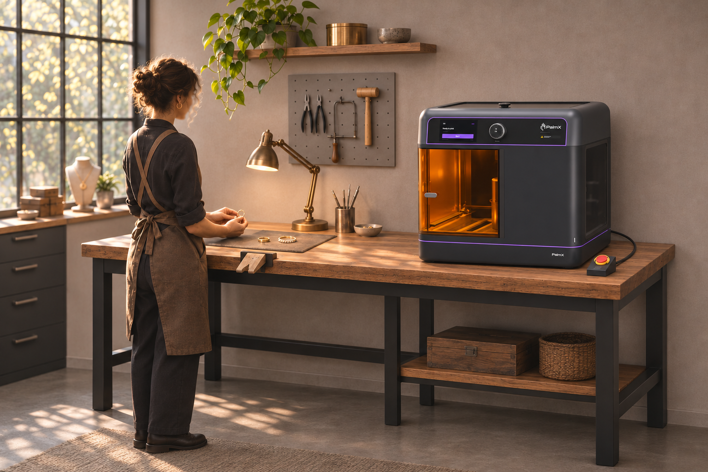

PalmX G1 Hybrid
桌面五轴 CNC + 激光
面向海外创客与小型工作室，通过 AI 辅助规划与多端协同，降低从设计到加工的使用门槛。

01 · 需求调研
先上手，
再定义产品体验。
结合竞品体验、工厂实操、工坊走访与用户访谈，梳理操作痛点、用户画像和任务流程。
- 目标用户访谈
- 20+ 位
- 竞品调研
- 约 14 家
竞品体验与工厂实操
关注装夹判断、加工反馈与异常恢复。
工坊走查 · CrashSpace
01 / 08
走进 CrashSpace
洛杉矶创客工坊现场走访记录。
调研归纳
HMW如何通过 AI-native 的软件体验，将复杂的加工逻辑转化为清晰、可控的操作流程？
02 · 产品信息架构
从需求梳理，到三端分工。
按场景明确优先级与终端归属。
从一级入口展开任务与操作流程。
PC
创作与加工准备
- 首页
- 新建项目 · 最近任务
- 工作台
- 项目 → 零件 → 工作视图导入 · 方案 · 仿真 · 下发
- 机器
- 状态 · 历史 · 配置 · 维护
- 资源库
- 刀具 · 材料 · 工艺
- 设置
- 账号 · 应用偏好
HMI
机旁准备与执行
- 任务入口
- 设备状态 · 加工文件
- 加工
- 准备 → 检查 → 执行现场确认 · 进度 · 暂停与恢复
- 手动控制
- 移动 · 定位 · 校准
- 刀具
- 刀具管理 · 对刀
- 诊断与设置
- 报警恢复 · 网络与设备配置
App
连接与远程关注
- 设备工坊
- 设备列表 · 连接与监控进度 · 完成与异常提醒
- 发现
- 作品 · 学习内容规划
- 轻创作
- 灵感 · 项目入口规划
- 我的
- 账号 · 消息偏好
PC 生成并下发任务→
HMI 现场检查与启动→
App 查看状态与提醒
03 · AI-native 产品方案
从创作、加工，到作品分享。
PC / HMI：核心功能开发；App / 社区：交互原型。
04 · 人机交互优化
让软件交互对应设备操作。
协同机械与运动控制团队，梳理操作方式与异常恢复。
智能旋钮交互
替代传统手轮，聚焦倍率与步进。
样机交互测试
观察机旁操作，记录使用反馈。
异常情况梳理
归类触发场景、原因与处置方式。
05 · AI 辅助交付
我的 AI 协作方法
我定目标、取舍与验收，AI 辅助检索、原型、实现与走查。
-
调研分析
带证据提问先给资料，再核查结论
-
产品定义
先定验收明确目标、边界与异常
-
交互原型
小步验证一次验证一个设计问题
-
设计实现
规范入上下文复用 UI Kit，分段实现
-
走查验证
复现再修正对照截图、日志与用例
-
交付沉淀
把方法变成 Skill复用规范、模板与流程
工具与 Skill 的配合
Claude / Codex 组织任务，Figma / FigJam、浏览器与代码仓库承接执行。
- 调研
- research 查资料、留来源
- 定义
- domain-modeling 理清概念与边界
- 原型
- prototype · palmx-hmi-prototype 验证交互、复用 UI Kit
- 实现
- Figma 相关 skills 连接设计、组件与代码
- 验证
- diagnosing-bugs · code-review 定位问题、对照需求
- 交付
- task-management · 文档类 skills 整理状态与交接材料
按任务选用；以上为方法映射，非逐项调用记录。
AI × MCP 建模
连接 Blender，生成与调整模型。
Codex 使用记录
持续用于原型、实现与走查。
Claude Design
探索设计方向，对比多版方案。
06 · Other works
独立站与设计资产
独立站
内容规划与交互原型
动效暂时无法加载
设计资产
我的贡献
- 主导定义
- 用户研究、需求规划、信息架构与跨端体验。
- 协作落地
- 对齐机械、运动控制与研发约束，推进功能实现、联调与体验走查。
- 交付成果
- PC / HMI 产品方案、App / 社区交互原型，以及设计系统与品牌资产。